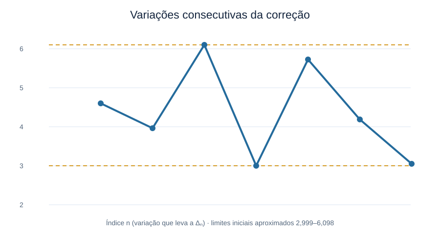
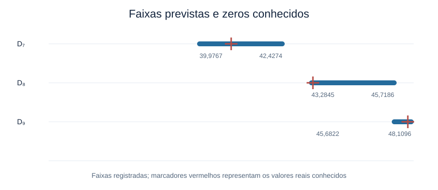
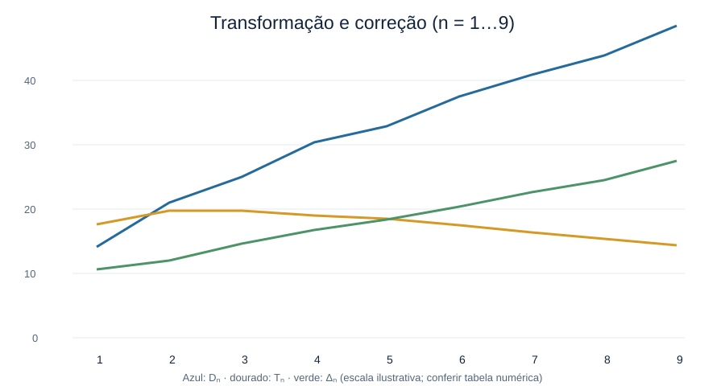
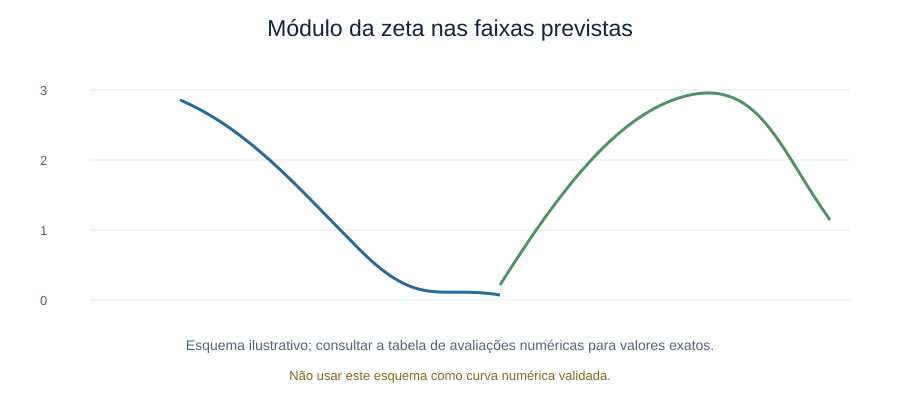

Sobre a investigação
Uma pergunta matemática, uma abordagem própria
O estudo parte dos zeros não triviais da função zeta de Riemann e explora uma transformação trigonométrica das suas coordenadas imaginárias. A partir dela, é construída uma sequência de diferenças para investigar possíveis regularidades numéricas.
O objetivo atual é avaliar se essas relações podem ajudar a estimar termos subsequentes, por meio de testes reproduzíveis e comparação com valores conhecidos.
Tn = −20 cos(ln Dn)
Transformação proposta
Δn = Dn − Tn
Sequência de diferenças
01 · Problema
O que está sendo investigado?
01 / CONTEXTO
Os zeros da função zeta
A localização e a distribuição dos zeros não triviais da função zeta de Riemann são temas centrais da teoria analítica dos números.
02 / TRANSFORMAÇÃO
Uma sequência transformada
Cada coordenada imaginária positiva Dn é usada para calcular um valor real Tn por meio de uma expressão trigonométrica.
03 / PERGUNTA
É possível estimar o próximo termo?
A questão é saber se as diferenças Δn seguem alguma regularidade que possa ser formulada e testada sem conhecer antecipadamente o próximo zero.
02 · Fundamentos
Conceitos essenciais
Função zeta de Riemann, ζ(s): função de variável complexa relacionada a resultados importantes sobre a distribuição dos números primos.
Zeros não triviais: zeros de ζ(s) situados na faixa crítica 0 < Re(s) < 1.
Linha crítica: reta Re(s) = ½. Para os zeros considerados nesta investigação, escreve-se sn = ½ + iDn.
Hipótese de Riemann: conjectura que afirma que todos os zeros não triviais têm parte real igual a ½.
03 · Método proposto
Transformação e sequência de diferenças
A transformação proposta é:
Em seguida, define-se a diferença:
A identidade Dn = Tn + Δn recupera o valor original por definição. O problema de pesquisa é encontrar uma regra independente que permita estimar Δn+1 usando dados anteriores.
Nota de rigor científico
Esta é uma investigação exploratória. A transformação, por si só, não demonstra a Hipótese de Riemann nem gera novos zeros da função zeta. Qualquer capacidade preditiva precisa ser validada com dados não usados na construção do método.
04 · Teste preditivo preliminar
Teste do sétimo zero: faixa observada e previsão
Protocolo do primeiro teste. Usamos os seis primeiros valores conhecidos para calcular cinco diferenças consecutivas e construir uma faixa empírica. Com a transformação original, Tn = −20 cos(ln Dn), definimos Δn = Dn − Tn e δn = Δn − Δn−1.
As cinco diferenças observadas foram aproximadamente 4,5982; 3,9571; 6,0979; 2,9987; e 5,7252. Portanto:
2,9987 ≤ δn ≤ 6,0979
Faixa observada, não limite matemático garantido
Amplitude ≈ 3,0992
Média ≈ 4,6754
Faixa prevista para Δ7
Somamos os limites observados à correção Δ6 ≈ 19,8931.
Estimativa central para Δ7
Δ̂7 = Δ6 + média(δ)
Δ̂7 ≈ 24,5685
A média das cinco diferenças foi usada sem consultar o sétimo valor durante a previsão.
Resultado do primeiro teste
A conversão numérica da faixa de Δ7 produziu a faixa aproximada para D7 entre 39,9767 e 42,4274, com estimativa central D̂7 ≈ 41,3046. O valor conhecido, D7 ≈ 40,918719, ficou dentro da faixa; o erro absoluto da estimativa central foi aproximadamente 0,3858, ou 0,94%.
05 · Teste seguinte
Previsão do oitavo zero com a faixa empírica
Regra mantida. Para o teste seguinte, usamos a correção conhecida do sétimo zero, Δ7 ≈ 24,080645, e a mesma faixa de variações registrada anteriormente. Não usamos o valor real de D8 para construir os limites.
Δ8mín = Δ7 + 2,998732
Δ8máx = Δ7 + 6,097928
27,079377 ≤ Δ8 ≤ 30,178573
Convertendo os limites pela relação Δ = D + 20 cos(ln D), obtemos a seguinte faixa para a coordenada imaginária positiva do oitavo zero:
43,284549 ≤ D8 ≤ 45,718557
LIMITE INFERIOR
43,284549
Conversão do limite inferior da correção.
ESTIMATIVA CENTRAL
44,602442
Δ̂8 ≈ Δ7 + média das cinco diferenças ≈ 28,7560; depois, resolução numérica para D.
LIMITE SUPERIOR
45,718557
Conversão do limite superior da correção.
Conferência com o valor conhecido
O valor conhecido da oitava parte imaginária positiva é D8 ≈ 43,327073, que fica dentro da faixa prevista.
43,284549 ≤ 43,327073 ≤ 45,718557
A correção calculada a partir do valor conhecido é Δ8 ≈ 27,133419. Assim, a variação seguinte é:
δ8 = Δ8 − Δ7
δ8 ≈ 3,052773
2,998732 ≤ 3,052773 ≤ 6,097928
Portanto, tanto o oitavo zero quanto a variação observada após sua conferência ficaram dentro das respectivas faixas empíricas definidas anteriormente.
Interpretação e limites.
O teste do oitavo zero é compatível com a faixa empírica construída a partir das cinco diferenças anteriores. Isso é uma observação exploratória, não uma garantia de que zeros futuros ficarão dentro da faixa. Para uma avaliação mais forte, a regra precisa permanecer fixa e ser testada em uma sequência maior de zeros não usados para definir ou ajustar os limites.
06 · Interpretação computacional
Por que trabalhar com números reais?
A potência complexa auxiliar pode ser escrita como Dni = cos(ln Dn) + i sin(ln Dn). Ao selecionar sua parte real, a transformação usa apenas cos(ln Dn) para calcular Tn. A etapa de transformação, portanto, pode ser implementada com operações reais: logaritmo, cosseno, multiplicação e subtração.
Isso pode deixar o algoritmo e a apresentação dos cálculos mais simples, além de facilitar o uso de tabelas, intervalos e rotinas de previsão com números reais. Porém, não significa que computadores tenham dificuldade inerente com números complexos — eles também os calculam normalmente.
O papel da faixa de erro: em vez de afirmar um único próximo valor exato, o método produz limites inferior e superior derivados das diferenças observadas. A estimativa central é uma referência dentro desse intervalo. A utilidade do procedimento depende de sua capacidade de manter boa cobertura e erros controlados em testes futuros.
Nota de rigor científico.
A transformação real não elimina a parte imaginária do zero original da zeta nem cria, por si só, um novo zero. Ela transforma a coordenada Dn em Tn e permite estudar uma sequência auxiliar de diferenças. Os resultados atuais não demonstram a Hipótese de Riemann; investigam apenas uma possível regularidade numérica e sua capacidade preditiva.
06 · Terceiro teste consecutivo
Previsão do nono zero: faixa e conferência
Regra mantida. Usamos a correção conhecida do oitavo zero, Δ8 ≈ 27,133419, e a faixa empírica de variações observada nos cinco intervalos iniciais. O valor real do nono zero não foi usado para construir a previsão.
2,998732 ≤ δn ≤ 6,097928
30,132150 ≤ Δ9 ≤ 33,231346
Faixa para a correção do nono zero
Δ̂9 ≈ 31,808838
Estimativa central pela média inicial, 4,675420
Convertendo os limites e a estimativa central pela relação Δ = D + 20 cos(ln D), obtemos:
45,682157 ≤ D9 ≤ 48,109610
D̂9 ≈ 46,996005
Faixa visual de previsão
A barra representa o intervalo previsto. O marcador vertical indica o valor real conhecido, usado apenas depois de fixar a previsão.
45,68215748,109610
│ Estimativa: 46,996005
│ Real: 48,005151
O valor real do nono zero, D9 ≈ 48,005151, ficou dentro da faixa prevista e próximo do limite superior.
45,682157 ≤ 48,005151 ≤ 48,109610
ESTIMATIVA CENTRAL
46,996005
Previsão antes da conferência.
VALOR REAL
48,005151
Coordenada imaginária positiva conhecida.
ERRO CENTRAL
≈ 2,10%
Erro absoluto aproximado: 1,009146.
A variação observada também ficou na faixa?
Com o valor real conhecido, calculamos Δ9 ≈ 33,097871 e, portanto, δ9 = Δ9 − Δ8 ≈ 5,964453.
2,998732 ≤ 5,964453 ≤ 6,097928
A variação real ficou dentro da faixa empírica inicial. Essa conferência é posterior à previsão e não foi usada para construir os limites do teste.
Interpretação.
Nos testes documentados para o sétimo, oitavo e nono zeros, os valores conhecidos ficaram dentro das faixas previstas. Isso é um resultado exploratório de cobertura em uma amostra pequena, não uma garantia de desempenho futuro. A faixa original foi estimada com apenas cinco diferenças e deve ser mantida fixa para os próximos testes, sem reajustá-la depois de conhecer os resultados.
07 · Caderno de previsão
Da reconstrução à previsão por intervalos
Etapa 1 — Modelo com o zero conhecido. Inicialmente, calcula-se Tn a partir de Dn conhecido e depois Δn = Dn − Tn. Isso descreve e reconstrói um dado já conhecido; isoladamente, não prevê o próximo zero.
Etapa 2 — Observar as variações. Calcula-se δn = Δn − Δn−1. Nos cinco intervalos iniciais usados no estudo, observou-se aproximadamente:
2,998732 ≤ δn ≤ 6,097928
Faixa empírica inicial, extraída de cinco observações
Etapa 3 — Prever sem consultar o próximo zero. Partindo da última correção conhecida, projeta-se Δn+1 somando o limite inferior e o superior. Depois, resolve-se numericamente Δ = D + 20 cos(ln D) para converter os limites em uma faixa para Dn+1.
Etapa 4 — Congelar a previsão. Antes de consultar o valor real, registrar limites, centro, regra utilizada e data/versão do cálculo. Só depois comparar com o zero conhecido e calcular erro e cobertura.
Etapa 5 — Refinar sem viciar o teste. Uma nova transformação ou novos limites devem ser desenvolvidos com um conjunto de dados e testados em zeros posteriores que não participaram do ajuste.
Como ler este caderno.
O intervalo é uma faixa de previsão empírica, não uma garantia matemática. Os zeros D7, D8 e D9 ficaram dentro das faixas documentadas até aqui, mas a amostra ainda é pequena. A identidade Δ = D + 20 cos(ln D) é usada para inverter a transformação; ela não demonstra que exista um zero fora da linha crítica.
08 · Conferência dentro da faixa
O que acontece entre os limites previstos?
Para a faixa prevista para D9, 45,682157 ≤ t ≤ 48,109610, podemos avaliar ζ(½ + it) em pontos de teste. O módulo |ζ(½ + it)| indica a distância do valor da função a zero: se o módulo é positivo, aquele ponto específico não é um zero. Os valores abaixo são avaliações numéricas aproximadas, não uma prova de que não existam outros zeros entre os pontos amostrados.
| t testado | |ζ(½ + it)| aprox. | Leitura |
|---|
| 45,682157 | 3,662628 | Não é zero |
| 46,000000 | 3,528271 | Não é zero |
| 46,500000 | 2,931592 | Não é zero |
| 46,895884 | 2,207722 | Centro da faixa; não é zero |
| 47,000000 | 1,994562 | Não é zero |
| 47,500000 | 0,937247 | Não é zero |
| 48,000000 | 0,008095 | Valor próximo de zero; não é exatamente zero nessa avaliação |
| 48,109610 | 0,155836 | Não é zero |
O nono zero conhecido está em D9 ≈ 48,005151, dentro da faixa. A amostragem mostra que muitos pontos da faixa não são zeros — como é esperado — e não significa que todos os números da faixa sejam zeros. Para identificar todos os zeros dentro de um intervalo, seria necessário um procedimento de localização e verificação de zeros, não apenas avaliar alguns pontos.
Distinção importante.
A faixa de previsão refere-se à coordenada t de um possível zero na linha crítica, s = ½ + it. Avaliar ζ(½ + it) em pontos da faixa testa se esses pontos específicos são zeros nessa linha; isso não pesquisa zeros com parte real diferente de ½ e, portanto, não testa por si só a Hipótese de Riemann.
06 · Registro visual
Gráficos e dados da investigação
Painel visual para acompanhar a transformação, as faixas de previsão e o comportamento numérico observado. Os gráficos esquemáticos estão identificados como tais; para cálculos exatos, consulte os valores tabulados.
1. Variações consecutivas da correção
Limites empíricos iniciais: aproximadamente 2,998732 a 6,097928.

2. Faixas previstas para D7, D8 e D9

3. Transformação e correção
Esquema visual ilustrativo; não utilizar para extrair valores numéricos.

4. Módulo da função zeta nas faixas
Esquema ilustrativo. A curva não representa amostragem numérica validada; consulte as avaliações pontuais registradas na seção de pontos dentro da faixa.

Nota metodológica.
As faixas D7–D9 são resultados exploratórios. Os gráficos não provam um limite universal para as variações nem a Hipótese de Riemann. Os valores numéricos devem ser conferidos contra uma fonte confiável e um procedimento de cálculo reproduzível.
05 · Plano de investigação
Etapas de desenvolvimento
1. FormalizarDefinir notação, hipóteses e procedimentos de cálculo.
2. CalcularReproduzir os valores transformados para zeros conhecidos.
3. TestarAvaliar possíveis regras em dados separados do ajuste.
4. CompararMedir erros e comparar com referências matemáticas.
06 · Estado atual
Resultados preliminares
Os cálculos iniciais são exploratórios e servem para formular perguntas sobre o comportamento de Tn e Δn. Ainda é necessário estabelecer um procedimento de previsão independente e avaliar seu desempenho em dados de teste.
Nenhuma conclusão sobre a Hipótese de Riemann é reivindicada nesta etapa.
07 · Continuidade
Referências e caderno técnico
Esta área poderá reunir referências bibliográficas verificadas, tabelas de cálculo, definições completas, métodos de estimação e o histórico de versões da investigação.
O conteúdo poderá ser expandido à medida que os cálculos forem revisados e os testes forem documentados.